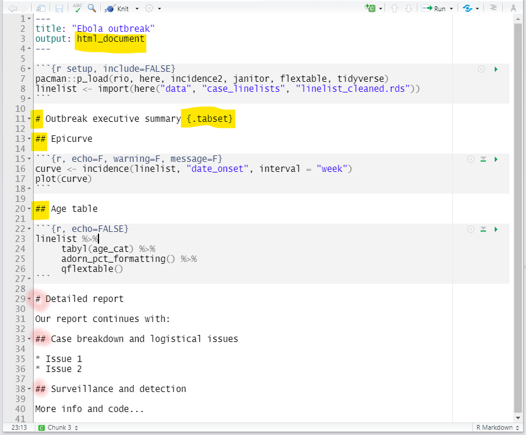

40 Relatórios com R Markdown

R Markdown é uma ferramenta amplamente usada para criar produtos automatizados, reproduzíveis e compartilháveis, como relatórios. É possível criar produtos estáticos ou interativos, em MS Word, pdf, html, powerpoint, entre outros formatos.
Um script de R Markdown intercala código em R e texto de modo que o script se torna o seu output final. é possível criar um documento completamente formatado, incluindo o texto (que pode ser dinâmico para mudar de acordo com os seus dados), tabelas, figuras, itens enumerados ou não, bibliografia, etc.
Esses documentos podem ser produzidos para serem atualizados com base em uma rotina (por exemplo, relatórios diários de vigilância) ou rodarem com subconjuntos dos seus dados, como relatórios para cada jurisdição de uma agência.
Outras páginas nesse livro expandem esse assunto:
- A página Organização de relatórios de rotina demonstra como aplicar uma rotina à produção de relatórios com pastas geradas automaticamente com seus metadados de tempo (timestamps).
- A página Dashboards with R Markdown explica como formatar um relatório R Markdown como um painel (dashboard).
Em outra nota, o projeto R4Epis tem desenvolvido templates de scripts R Markdown para surtos comuns e cenários de pesquisa encontrados em locais do projeto MSF (Médicos Sem Fronteiras).
40.1 Preparação
Ideias preliminares ao R Markdown
Para explicar alguns dos conceitos e pacotes envolvidos:
- Markdown é uma “linguagem” que permite escrever um documento usando texto comum, que pode ser convertido para html e outros formatos. Não é específico de R e arquivos escritos nessa “linguagem” tem extensão ‘.md’.
-
R Markdown: é uma variação de markdown que é específica de R - permite escrever um documento usando markdown para produzir código, mas também incluir código em R e expor seus resultados.
- rmarkdown - o pacote: é usado pelo R para renderizar o arquivo .Rmd para a exportação desejada. Seu foco é converter a sintaxe markdown (texto), então também precisamos de…
- knitr: Esse pacote do R lerá os blocos de código, executá-los e costurá-los (do inglês knit, tricotar) de volta ao documento.
- Pandoc: Finalmente, pandoc converte o objeto final em um documento word/pdf/powerpoint, etc. É um software separado do R, mas é instalado automaticamente com o RStudio.

(Fonte: https://rmarkdown.rstudio.com/authoring_quick_tour.html):
Instalação
Para criar um produto R Markdown, é necessário ter os seguintes instalados:
- O pacote rmarkdown (knitr será automaticamente instalado também)
- Pandoc, que deve ter vindo instalado com RStudio. Se você não está usando RStudio, é possível baixar o Pandoc aqui: http://pandoc.org.
- Se quiser gerar um arquivo PDF (um pouquinho mais complicado), será necessário instalar o LaTeX. Para usuários de R Markdown que nunca instalaram o LaTeX antes, recomendamos que instale o TinyTeX (https://yihui.name/tinytex/). Para isso, use os seguintes comandos:
pacman::p_load(tinytex) # instala o pacote tinytex
tinytex::install_tinytex() # Comando de R para instalar o software TinyTeX40.2 Começando
Instalação do pacote rmarkdown para R
Instale o pacote rmarkdown. Neste livro enfatizamos p_load() de pacman, que instala o pacote se necessário e o carrega para ser usado. É possível também carregar pacotes instalados com library() do R base. Vera a pagina em Introdução ao R para mais informação sobre os pacotes de R.
pacman::p_load(rmarkdown)Começando um novo arquivo Rmd
No Rstudio, abra um novo arquivo R markdown, começando em ‘Arquivo’, depois ‘Novo arquivo’, depois em ‘R markdown…’.

Rstudio lhe dará opções de output para selecionar. No exemplo abaixo, escolhemos “HTML” porque queremos criar um documento html. O título e o nome do autor não são importantes. Se o tipo do documento de saída desejado não é nenhum desses, não se preocupe - é possível escolher qualquer um e alterar posteriormente.

Isso abrirá um novo script .Rmd.
Importante saber
O diretório de trabalho
O diretório de trabalho de um arquivo markdown é o local onde o próprio arquivo Rmd é salvo. Por exemplo, se o projeto R estiver dentro de ~/Documents/projectX e o próprio arquivo Rmd estiver em uma subpasta~/Documents/projectX/markdownfiles/markdown.Rmd, o código read.csv("data.csv") Dentro do markdown irá procurar por um arquivo csv na pasta markdownfiles, e não na pasta raiz do projeto onde os scripts dentro dos projetos normalmente procurariam automaticamente.
Para se referir a arquivos em outro lugar, você precisará usar o caminho completo do arquivo ou usar o pacote here. O pacote here define o diretório de trabalho para a pasta raiz do projeto R e é explicado em detalhes nas páginas Projetos R e Importar e exportar)(#importing) deste manual. Por exemplo, para importar um arquivo chamado “data.csv” de dentro da pasta projectX, o código seria import(here(“data.csv”)).
Observe que o uso de setwd() em scripts R Markdown não é recomendado - ele se aplica apenas ao trecho de código em que está escrito.
Trabalhando em uma unidade vs no seu computador
Como o R Markdown pode ter problemas de pandoc ao ser executado em uma unidade de rede compartilhada, é recomendado que sua pasta esteja em sua máquina local, por exemplo, em um projeto em ‘Meus Documentos’. Se você usa Git (muito recomendado!), Isso será familiar. Para obter mais detalhes, consulte as páginas do manual em R em unidades de rede e Erros e ajuda.
40.3 Componentes do R Markdown
Um documento R Markdown pode ser editado no RStudio da mesma forma que um script R padrão. Quando você inicia um novo script R Markdown, o RStudio tenta ser útil mostrando um modelo que explica as diferentes seções de um script R Markdown.
A seguir está o que aparece ao iniciar um novo script Rmd destinado a produzir uma saída html (conforme a seção anterior).

Como você pode ver, existem três componentes básicos em um arquivo Rmd: YAML, texto Markdown e blocos de código R.
Eles irão criar e se tornar a saída do seu documento. Veja o diagrama abaixo:
Metadados YAML
Referido como ‘metadados YAML’ ou apenas ‘YAML’, isso está no topo do documento R Markdown. Esta seção do script dirá ao seu arquivo Rmd que tipo de saída produzir, preferências de formatação e outros metadados, como título do documento, autor e data. Existem outros usos não mencionados aqui (mas mencionados em ‘Produção de uma saída’). Observe que o recuo é importante; tabulações não são aceitas, mas espaços, sim.
Esta seção deve começar com uma linha contendo apenas três traços --- e deve fechar com uma linha contendo apenas três traços ---. Os parâmetros YAML vêm em pares chave: valor. A colocação dos dois pontos em YAML é importante - os pares chave: valor são separados por dois pontos (e não sinais de igual!).
O YAML deve começar com metadados para o documento. A ordem desses parâmetros YAML primários (não recuados) não importa. Por exemplo:
You can use R code in YAML values by writing it as in-line code (preceded by r within back-ticks) but also within quotes (see above example for date:).
In the image above, because we clicked that our default output would be an html file, we can see that the YAML says output: html_document. However we can also change this to say powerpoint_presentation or word_document or even pdf_document.
Você pode usar o código R em valores YAML escrevendo-o como código in-line (precedido por r dentro de crases), mas também entre aspas (veja o exemplo acima para date:).
Na imagem acima, como clicamos que nossa saída padrão seria um arquivo html, podemos ver que o YAML diz output: html_document. No entanto, também podemos alterar isso para dizer powerpoint_presentationouword_document ou mesmo pdf_document.
40.3.1 Texto
Esta é a narrativa do seu documento, incluindo os títulos e cabeçalhos. Ele é escrito na linguagem “markdown”, que é usada em muitos softwares diferentes.
Abaixo estão as principais maneiras de escrever este texto. Consulte a documentação mais extensa disponível na “cheatsheet” do R Markdown no site do RStudio.
Novas linhas
Exclusivamente no R Markdown, para iniciar uma nova linha, insira dois espaços no final da linha anterior e pressione Enter / Return.
Case
Cerque seu texto normal com esses caracteres para alterar como ele aparece na saída.
- Sublinhados (
_text_) ou asterisco único (*texto*) para itálico - Asteriscos duplos (
**texto**) para texto em negrito - Crases (
text) para exibir o texto como código
A aparência real da fonte pode ser definida usando modelos específicos (especificados nos metadados YAML; consulte as guias de exemplo).
40.3.1.1 Cor
Não existe um mecanismo simples para alterar a cor do texto no R Markdown. Uma solução alternativa, SE sua saída for um arquivo HTML, é adicionar uma linha HTML ao texto markdown. O código HTML abaixo imprimirá uma linha de texto em vermelho negrito.
[PERIGO: Este é um aviso.] {style = “color: red;”}
Títulos e cabeçalhos
Um símbolo hash (#) em uma parte do texto de um script R Markdown cria um título. Isso é diferente de um pedaço de código R no script, no qual um símbolo hash é um mecanismo para comentar / anotar / desativar, como em um script R normal.
Diferentes níveis de título são estabelecidos com diferentes números de símbolos hash no início de uma nova linha. Um símbolo de hash é um título ou cabeçalho principal. Dois símbolos hash são um título de segundo nível. Os cabeçalhos de terceiro e quarto níveis podem ser feitos com mais símbolos hash sucessivamente.
Marcadores e numeração
Use asteriscos (*) para criar uma lista de marcadores. Conclua a frase anterior, insira dois espaços, Enter/Return duas vezes e, em seguida, inicie seus marcadores. Inclua um espaço entre o asterisco e o texto do marcador. Após cada marcador, insira dois espaços e pressione Enter/Return. Os submarcadores funcionam da mesma maneira, mas são recuados. Os números funcionam da mesma maneira, mas em vez de um asterisco, escreva 1), 2), etc. Abaixo está a aparência do texto do script R Markdown.

Blocos de código
As seções do script que são dedicadas à execução do código R são chamadas de “blocos”. É aqui que você pode carregar pacotes, importar dados e realizar o gerenciamento e visualização de dados reais. Pode haver muitos blocos de código, então eles podem ajudá-lo a organizar seu código R em partes, talvez intercaladas com texto. Note: Esses ‘pedaços’ parecerão ter uma cor de fundo ligeiramente diferente da parte narrativa do documento.
Cada pedaço é aberto com uma linha que começa com três crases e chaves que contêm parâmetros para o pedaço ({}). O pedaço termina com mais três crases.
Você pode criar um novo bloco digitando-o você mesmo, usando o atalho de teclado “Ctrl+Alt+i” (ou Cmd+Shift+r no Mac) ou clicando no ícone verde ‘inserir um novo bloco de código’ no topo do seu editor de script.
Algumas notas sobre o conteúdo das chaves {}:
- Eles começam com ‘r’ para indicar que o nome do idioma dentro do bloco é R
- Após o r, você pode opcionalmente escrever um “nome” de trecho – eles não são necessários, mas podem ajudá-lo a organizar seu trabalho. Observe que se você nomear seus blocos, você deve SEMPRE usar nomes exclusivos ou então R reclamará quando você tentar renderizar.
- As chaves também podem incluir outras opções, escritas como
tag = value, como:
-
eval = FALSEpara não executar o código R
-
echo = FALSEpara não imprimir o código-fonte R do trecho no documento de saída
-
aviso = FALSOpara não imprimir avisos produzidos pelo código R
-
mensagem = FALSOpara não imprimir nenhuma mensagem produzida pelo código R
-
incluir =VERDADEIRO / FALSO se incluir saídas em partes (por exemplo, gráficos) no documento -
out.width =eout.height =- fornecer no estiloout.width ="75%"
-
fig.align = "center"ajustar como uma figura é alinhada na página
-
fig.show = 'hold'se o seu pedaço imprimir várias figuras e você quiser que elas sejam impressas lado a lado (par comout.width = c("33%", "67%"). Também pode ser definido comofig.show = 'asis'para mostrá-los abaixo do código que os gera,'hide'para ocultar ou'animate'para concatenar múltiplos em uma animação.
- Um cabeçalho de bloco deve ser escrito em uma linha
- Tente evitar pontos, sublinhados e espaços. Use hifens ( - ) se precisar de um separador.
Leia mais extensivamente sobre as opções do knitr aqui.
Algumas das opções acima podem ser configuradas com apontar e clicar usando os botões de configuração no canto superior direito do bloco. Aqui, você pode especificar quais partes do pedaço você deseja que o documento renderizado inclua, a saber, o código, as saídas e os avisos. Isso sairá como preferências escritas dentro das chaves, por exemplo, echo = FALSE se você especificar que deseja ‘Mostrar apenas a saída’.

Também há duas setas no canto superior direito de cada fragmento, que são úteis para executar o código dentro de um fragmento ou todo o código em blocos anteriores. Passe o mouse sobre eles para ver o que fazem.
Para que as opções globais sejam aplicadas a todos os fragmentos do script, você pode configurar isso em seu primeiro bloco de código R no script. Por exemplo, para que apenas as saídas sejam mostradas para cada bloco de código e não o código em si, você pode incluir este comando no fragmento de código R:
knitr::opts_chunk$set(echo = FALSE) Código R no texto
Você também pode incluir código R mínimo dentro de crases. Dentro dos crases, comece o código com “r” e um espaço, para que o RStudio saiba avaliar o código como código R. Veja o exemplo abaixo.
O exemplo abaixo mostra vários níveis de título, marcadores e usa o código R para a data atual (Sys.Date ()) para avaliar em uma data impressa.

O exemplo acima é simples (mostrando a data atual), mas usando a mesma sintaxe, você pode exibir valores produzidos por códigos R mais complexos (por exemplo, para calcular o mínimo, a mediana, o máximo de uma coluna). Você também pode integrar objetos R ou valores que foram criados em blocos de código R anteriormente no script.
Como exemplo, o script abaixo calcula a proporção de casos com menos de 18 anos, usando as funções tidyverse, e cria os objetos less18,total e less18prop. Este valor dinâmico é inserido no texto subsequente. Vemos como fica quando imprimimos um documento do Word.

40.3.2 Imagens
Você pode incluir imagens em seu R Markdown de duas maneiras:
Se o acima não funcionar, tente usar knitr::include_graphics()
knitr::include_graphics("path/to/image.png")(lembre-se, o caminho do seu arquivo pode ser escrito usando o pacote here)
knitr::include_graphics(here::here("path", "to", "image.png"))40.3.3 Tabelas
Crie uma tabela usando hifens ( - ) e barras ( | ). O número de hifens antes/entre as barras permite o número de espaços na célula antes que o texto comece a quebrar.
Column 1 |Column 2 |Column 3
---------|----------|--------
Cell A |Cell B |Cell C
Cell D |Cell E |Cell FO código acima produz a tabela abaixo:
| Column 1 | Column 2 | Column 3 |
|---|---|---|
| Cell A | Cell B | Cell C |
| Cell D | Cell E | Cell F |
40.3.4 Seções com guias
Para saídas HTML, você pode organizar as seções em “guias”. Basta adicionar .tabset nas chaves {}que são colocadas * após um título *. Quaisquer subtítulos abaixo desse título (até outro título do mesmo nível) aparecerão como guias nas quais o usuário pode clicar. Leia mais aqui

Você pode adicionar uma opção adicional .tabset-pills após .tabset para dar às próprias guias uma aparência de pastilha. Esteja ciente de que, ao visualizar a saída HTML com guias, a funcionalidade de pesquisa Ctrl+f pesquisará apenas guias “ativas”, não guias ocultas.
40.4 Estrutura do arquivo
Existem várias maneiras de estruturar seu R Markdown e quaisquer scripts R associados. Cada um tem vantagens e desvantagens:
- R Markdown independente - tudo o que é necessário para o relatório é importado ou criado dentro do R Markdown
- Fonte de outros arquivos - Você pode executar scripts R externos com o comando
source()e usar suas saídas no Rmd - Scripts filhos - um mecanismo alternativo para
source() - Utilizar um “runfile” - Executar comandos em um script R antes de renderizar o R Markdown
40.4.1 Rmd independente {.não numerado}
Para um relatório relativamente simples, você pode optar por organizar seu script R Markdown de forma que seja “independente” e não envolva nenhum script externo.
Tudo que você precisa para executar o markdown R é importado ou criado dentro do arquivo Rmd, incluindo todos os pedaços de código e carregamento de pacote. Esta abordagem “independente” é apropriada quando você não precisa fazer muito processamento de dados (por exemplo, traz um arquivo de dados limpo ou semilimpeza) e a renderização do R Markdown não demora muito.
Neste cenário, uma organização lógica do script R Markdown pode ser:
- Defina as opções globais do knitr
- Carregar pacotes
- Importar dados
- Dados do processo
- Produza resultados (tabelas, gráficos, etc.)
- Salve as saídas, se aplicável (.csv, .png, etc.)
Fonte de outros arquivos
Uma variação da abordagem “independente” é fazer com que os pedaços de código do R Markdown “originem” (executem) outros scripts R. Isso pode tornar seu script R Markdown menos confuso, mais simples e mais fácil de organizar. Também pode ajudar se você deseja exibir os valores finais no início do relatório. Nesta abordagem, o script final R Markdown simplesmente combina saídas pré-processadas em um documento.
Uma maneira de fazer isso é fornecendo os scripts R (caminho e nome do arquivo com extensão) para o comando R base source().
source("your-script.R", local = knitr::knit_global())
# or sys.source("your-script.R", envir = knitr::knit_global())Observe que ao usar source() dentro do R Markdown, os arquivos externos ainda serão executados durante o curso de renderização de seu arquivo Rmd. Portanto, cada script é executado sempre que você renderiza o relatório. Portanto, ter esses comandos source() dentro do R Markdown não acelera seu tempo de execução, nem ajuda muito na eliminação de bugs, pois o erro produzido ainda será impresso ao produzir o R Markdown.
Uma alternativa é utilizar a opção child = knitr. EXPLIQUE MAIS A FAZER
Você deve estar ciente dos vários ambientes R. Os objetos criados dentro de um ambiente não estarão necessariamente disponíveis para o ambiente usado pelo R Markdown.
Runfile
Esta abordagem envolve a utilização do script R que contém o (s) comando (s) render() para pré-processar objetos que alimentam o markdown R.
Por exemplo, você pode carregar os pacotes, carregar e limpar os dados e até mesmo criar os gráficos de interesse antes de render(). Essas etapas podem ocorrer no script R ou em outros scripts originados via source. Contanto que esses comandos ocorram na mesma sessão RStudio e os objetos sejam salvos no ambiente, os objetos podem ser chamados dentro do conteúdo Rmd. Em seguida, o próprio markdown R será usado apenas para a etapa final - para produzir a saída com todos os objetos pré-processados. Isso é muito mais fácil de corrigir se algo der errado.
Essa abordagem é útil pelos seguintes motivos:
- Mensagens de erro mais informativas - essas mensagens serão geradas a partir do script R, não do R Markdown. R Erros de Markdown tendem a dizer qual pedaço teve um problema, mas não revelam qual linha.
- Se aplicável, você pode executar longas etapas de processamento antes do comando
render()- elas serão executadas apenas uma vez.
No exemplo abaixo, temos um script R separado no qual pré-processamos um objeto data no ambiente R e então renderizamos o “create_output.Rmd” usando render().
40.4.2 Estrutura da pasta
O fluxo de trabalho também diz respeito à estrutura geral da pasta, como ter uma pasta de ‘saída’ para documentos e figuras criados e pastas de ‘dados’ ou ‘entradas’ para dados limpos. Não entramos em maiores detalhes aqui, mas verifique a página Organizando relatórios de rotina.
40.5 Produzindo o documento
Você pode produzir o documento das seguintes maneiras:
- Manualmente pressionando o botão “Knit” na parte superior do editor de script RStudio (rápido e fácil)
- Execute o comando
render()(executado fora do script R Markdown)
40.5.1 Opção 1: Botão “Knit”
Quando você tiver o arquivo Rmd aberto, pressione o ícone / botão ‘Knit’ na parte superior do arquivo.
R Studio mostrará o progresso em uma guia ‘R Markdown’ perto do console R. O documento será aberto automaticamente quando concluído.
O documento será salvo na mesma pasta que seu script markdown R e com o mesmo nome de arquivo (exceto a extensão). Obviamente, isso não é ideal para o controle de versão (será sobrescrito a cada vez que você exportar, a menos que movido manualmente), pois você pode precisar renomear o arquivo (por exemplo, adicionar uma data).
Este é o botão de atalho do RStudio para a função render() de rmarkdown. Essa abordagem é compatível apenas com um R markdown autocontido, onde todos os componentes necessários existem ou são originados no arquivo.

Opção 2: comando render()
Outra maneira de produzir a saída do R Markdown é rodar a função render() (do pacote rmarkdown). Você deve executar este comando fora do script R Markdown - ou em um script R separado (geralmente chamado de “arquivo de execução”) ou como um comando independente no R Console.
rmarkdown::render(input = "my_report.Rmd")Tal como acontece com “knit”, as configurações padrão salvarão a saída Rmd na mesma pasta do script Rmd, com o mesmo nome de arquivo (além da extensão do arquivo). Por exemplo, “my_report.Rmd” quando exportado criará “my_report.docx” se você estiver exportando para um documento do Word. No entanto, usando render() você tem a opção de usar configurações diferentes. render() pode aceitar argumentos, incluindo:
-
output_format =Este é o formato de saída para converter (por exemplo,"html_document","pdf_document","word_document"ou"all"). Você também pode especificar isso no YAML dentro do script R Markdown.
-
output_file =Este é o nome do arquivo de saída (e caminho do arquivo). Isso pode ser criado por meio de funções R comohere()oustr_glue()conforme demonstrado abaixo.
-
output_dir =Este é um diretório de saída (pasta) para salvar o arquivo. Isso permite que você escolha uma alternativa diferente do diretório em que o arquivo Rmd é salvo.
-
output_options =Você pode fornecer uma lista de opções que irão sobrescrever aquelas no script YAML (por exemplo) -
output_yaml =Você pode fornecer o caminho para um arquivo .yml que contém especificações YAML
-
params =Veja a seção sobre parâmetros abaixo
- Veja a lista completa aqui
Como um exemplo, para melhorar o controle de versão, o comando a seguir salvará o arquivo de saída dentro de uma subpasta ‘outputs’, com a data atual no nome do arquivo. Para criar o nome do arquivo, a função str_glue() do pacote stringr é usada para ‘colar’ strings estáticas (escritas de forma simples) com código R dinâmico (escrito entre colchetes). Por exemplo, se for 10 de abril de 2021, o nome do arquivo abaixo será “Report_2021-04-10.docx”. Veja a página em Caracteres e strings para mais detalhes sobre str_glue().
rmarkdown::render(
input = "create_output.Rmd",
output_file = stringr::str_glue("outputs/Report_{Sys.Date()}.docx")) À medida que o arquivo é renderizado, o console do RStudio mostrará o andamento da renderização em até 100% e uma mensagem final para indicar que a renderização foi concluída.
Opções 3: pacote reportfactory
O pacote R reportfactory oferece um método alternativo de organização e compilação de relatórios R Markdown voltados para cenários onde você executa relatórios rotineiramente (por exemplo, diariamente, semanalmente …). Facilita a compilação de vários arquivos R Markdown e o organização de seus resultados. Em essência, ele fornece uma “fábrica” a partir da qual você pode executar os relatórios R Markdown, obter pastas com carimbo de data e hora automaticamente para as saídas e ter controle de versão “leve”.
Leia mais sobre esse fluxo de trabalho na página Organização de relatórios de rotina.
40.6 Relatórios parametrizados
Você pode usar a parametrização para tornar um relatório dinâmico, de modo que possa ser executado com uma configuração específica (por exemplo, uma data ou local específico ou com certas opções de knit). Abaixo, nos concentramos no básico, mas há mais detalhes online sobre relatórios parametrizados.
Usando a lista de linha do Ebola como exemplo, digamos que queremos executar um relatório de vigilância padrão para cada hospital a cada dia. Mostramos como fazer isso usando parâmetros.
Importante: relatórios dinâmicos também são possíveis sem a estrutura formal de parâmetros (sem params:), usando objetos R simples em um script R adjacente. Isso é explicado no final desta seção.
Configurando parâmetros
Você tem várias opções para especificar valores de parâmetro para sua saída R Markdown.
Opção 1: Defina os parâmetros em YAML
Edite o YAML para incluir uma opção params:, com declarações recuadas para cada parâmetro que você deseja definir. Neste exemplo, criamos os parâmetros data ehospital, para os quais especificamos valores. Esses valores estão sujeitos a alterações cada vez que o relatório é executado. Se você usar o botão “Knit” para produzir a saída, os parâmetros terão esses valores padrão. Da mesma forma, se você usar render() os parâmetros terão esses valores padrão, a menos que seja especificado de outra forma no comando render().
---
title: Surveillance report
output: html_document
params:
date: 2021-04-10
hospital: Central Hospital
---Em segundo plano, esses valores de parâmetro estão contidos em uma lista somente leitura chamada params. Assim, você pode inserir os valores dos parâmetros no código R da mesma forma que faria com outro objeto / valor R em seu ambiente. Simplesmente digite params$ seguido do nome do parâmetro. Por exemplo, params$hospital para representar o nome do hospital (“Hospital Central” por padrão).
Observe que os parâmetros também podem conter valores true ou false e, portanto, podem ser incluídos nas opções do knitr para um bloco R. Por exemplo, você pode definir {r, eval = params$run} em vez de {r, eval = FALSE}, e agora se o trecho é executado ou não depende do valor de um parâmetro run:.
Observe que para os parâmetros que são datas, eles serão inseridos como uma string. Portanto, para que params$date seja interpretado no código R, ele provavelmente precisará ser empacotado com as.Date() ou uma função semelhante para converter para a classe Date.
Opção 2: Defina os parâmetros em render()
Como mencionado acima, uma alternativa para pressionar o botão “Knit” para produzir a saída é executar a função render() a partir de um script separado. Neste último caso, você pode especificar os parâmetros a serem usados naquela renderização para o argumento params = de render().
Observe que quaisquer valores de parâmetro fornecidos aqui irão sobrescrever seus valores padrão se escritos dentro do YAML. Escrevemos os valores entre aspas, pois neste caso eles devem ser definidos como valores de caractere / string.
O comando abaixo renderiza “monitoramento_report.Rmd”, especifica um nome de arquivo de saída dinâmica e pasta, e fornece uma list() de dois parâmetros e seus valores para o argumento params =.
Opção 3: Defina os parâmetros usando uma interface gráfica do usuário
Para uma sensação mais interativa, você também pode usar a Interface Gráfica do Usuário (GUI) para selecionar manualmente os valores dos parâmetros. Para fazer isso, podemos clicar no menu suspenso ao lado do botão ‘Knit’ e escolher ‘Knit com parâmetros’.
Um pop-up aparecerá permitindo que você digite valores para os parâmetros que são estabelecidos no YAML do documento.

Você pode conseguir o mesmo por meio de um comando render() especificando params = "ask ", como demonstrado abaixo.
rmarkdown::render(
input = "surveillance_report.Rmd",
output_file = stringr::str_glue("outputs/Report_{Sys.Date()}.docx"),
params = “ask”)No entanto, digitar valores nesta janela pop-up está sujeito a erros e erros ortográficos. Você pode preferir adicionar restrições aos valores que podem ser inseridos nos menus suspensos. Você pode fazer isso adicionando no YAML várias especificações para cada entrada params:.
-
label:é como o título para aquele menu suspenso específico -
value:é o valor padrão (inicial) -
input:definido comoselectpara o menu suspenso -
choices:Dê os valores elegíveis no menu suspenso
Abaixo, essas especificações são escritas para o parâmetro hospital.
---
title: Surveillance report
output: html_document
params:
date: 2021-04-10
hospital:
label: “Town:”
value: Central Hospital
input: select
choices: [Central Hospital, Military Hospital, Port Hospital, St. Mark's Maternity Hospital (SMMH)]
---Ao exportar (através do botão ‘knit com parâmetros’ ou por render()), a janela pop-up terá opções suspensas para selecionar.

Exemplo parametrizado
O código a seguir cria parâmetros para data ehospital, que são usados no R Markdown como params$date e params$hospital, respectivamente.
Na saída do relatório resultante, veja como os dados são filtrados para o hospital específico e o título do gráfico se refere ao hospital e à data corretos. Usamos o arquivo “linelist_cleaned.rds” aqui, mas seria particularmente apropriado se a própria lista de linha também tivesse um carimbo de data para alinhar com a data parametrizada.

Exportar isso produz a saída final com a fonte e o layout padrão.

Parametrização sem params
Se você estiver renderizando um arquivo R Markdown com render() de um script separado, você pode criar o impacto da parametrização sem usar a funcionalidade params:.
Por exemplo, no script R que contém o comando render(), você pode simplesmente definir hospital e date como dois objetos R (valores) antes do comando render(). No R Markdown, você não precisaria ter uma seção params: no YAML, e nos referiríamos ao objeto date ao invés de params$date e hospital ao invés deparams$hospital.
# This is a R script that is separate from the R Markdown
# define R objects
hospital <- "Central Hospital"
date <- "2021-04-10"
# Render the R markdown
rmarkdown::render(input = "create_output.Rmd") Seguir essa abordagem significa que você não pode “tricotar com parâmetros”, usar a GUI ou incluir opções de knit dentro dos parâmetros. No entanto, permite um código mais simples, o que pode ser vantajoso.
40.7 Reiterando relatórios
Podemos querer executar um relatório várias vezes, variando os parâmetros de entrada, para produzir um relatório para cada jurisdição / unidade. Isso pode ser feito usando ferramentas para iteração, que são explicadas em detalhes na página Iteração, loops e listas. As opções incluem o pacote purrr ou o uso de um for loop conforme explicado abaixo.
Abaixo, usamos um simples for loop para gerar um relatório de vigilância para todos os hospitais de interesse. Isso é feito com um comando (em vez de alterar manualmente o parâmetro do hospital um por vez). O comando para renderizar os relatórios deve existir em um script separado fora do relatório Rmd. Este script também conterá objetos definidos para “fazer um loop” - a data de hoje e um vetor de nomes de hospitais para fazer o loop.
hospitals <- c("Central Hospital",
"Military Hospital",
"Port Hospital",
"St. Mark's Maternity Hospital (SMMH)") Em seguida, alimentamos esses valores um de cada vez no comando render() usando um loop, que executa o comando uma vez para cada valor no vetor hospitais. A letra i representa a posição do índice (1 a 4) do hospital que está sendo usado nessa iteração, de modo que hospital_list[1] seria “Hospital Central”. Esta informação é fornecida em dois lugares no comando render():
- Para o nome do arquivo, de forma que o nome do arquivo da primeira iteração, se produzido em 10 de abril de 2021, seria “Report_Central Hospital_2021-04-10.docx”, salvo na subpasta ‘output’ do diretório de trabalho.
- Para
params =tal que o Rmd use o nome do hospital internamente sempre que o valorparams$hospitalé chamado (por exemplo, para filtrar o conjunto de dados para o hospital específico apenas). Neste exemplo, quatro arquivos seriam criados - um para cada hospital.
for(i in 1:length(hospitals)){
rmarkdown::render(
input = "surveillance_report.Rmd",
output_file = str_glue("output/Report_{hospitals[i]}_{Sys.Date()}.docx"),
params = list(hospital = hospitals[i]))
} <! - output_file = paste0 (“output / Report_”, hospital_list [i], refdate, “.docx”) ->
<! - O texto dentro da marcação precisaria então se referir a hospital_list [i] e refdate. ->
40.8 Modelos
Usando um documento de modelo que contém qualquer formatação desejada, você pode ajustar a estética de como a saída Rmd ficará. Você pode criar, por exemplo, um arquivo MS Word ou PowerPoint que contenha páginas / slides com as dimensões, marcas d’água, planos de fundo e fontes desejados.
40.8.1 Documentos do Word
Para criar um modelo, inicie um novo documento do Word (ou use uma saída existente com a formatação que mais lhe convier) e edite as fontes definindo os Estilos. Em Estilo, os títulos 1, 2 e 3 referem-se aos vários níveis de cabeçalho de redução (# Cabeçalho 1, ## Cabeçalho 2 e ### Cabeçalho 3 respectivamente). Clique com o botão direito no estilo e clique em ‘modificar’ para alterar a formatação da fonte, bem como o parágrafo (por exemplo, você pode introduzir quebras de página antes de certos estilos que podem ajudar com o espaçamento). Outros aspectos do documento do Word, como margens, tamanho da página, cabeçalhos, etc., podem ser alterados como um documento do Word normal no qual você está trabalhando diretamente.

40.8.2 Documentos do PowerPoint
Como acima, crie um novo conjunto de slides ou use um arquivo PowerPoint existente com a formatação desejada. Para outras edições, clique em ‘Exibir’ e ‘Slide Master’. A partir daqui, você pode alterar a aparência do slide ‘mestre’ editando a formatação do texto nas caixas de texto, bem como as dimensões do plano de fundo / página para a página geral.

Infelizmente, editar arquivos PowerPoint é um pouco menos flexível:
- Um cabeçalho de primeiro nível (
# Cabeçalho 1) se tornará automaticamente o título de um novo slide, - Um texto de
## Header 2não aparecerá como uma legenda, mas como um texto dentro da caixa de texto principal do slide (a menos que você encontre uma maneira de manipular a visualização mestre). - Plotagens e tabelas geradas irão automaticamente para novos slides. Você precisará combiná-los, por exemplo, a função patchwork para combinar ggplots, de modo que apareçam na mesma página. Veja esta postagem no blog sobre como usar o pacote patchwork para colocar várias imagens em um slide.
Veja o pacote officer para uma ferramenta para trabalhar mais a fundo com apresentações em PowerPoint.
Integração de modelos no YAML
Uma vez que um modelo é preparado, o detalhe disso pode ser adicionado no YAML do Rmd abaixo da linha de ‘output’ e abaixo de onde o tipo de documento é especificado (que vai para uma linha separada). Nota reference_doc pode ser usado para modelos de slides do PowerPoint.
É mais fácil salvar o modelo na mesma pasta onde está o arquivo Rmd (como no exemplo abaixo) ou em uma subpasta.
Formatando arquivos HTML
Os arquivos HTML não usam modelos, mas podem ter os estilos configurados no YAML. HTMLs são documentos interativos e são particularmente flexíveis. Cobrimos algumas opções básicas aqui.
Índice: Podemos adicionar um índice com
toc: trueabaixo, e também especificar que ele permanece visível (“floats”) conforme você rola, comtoc_float: true.Temas: Podemos nos referir a alguns temas pré-fabricados, que vêm de uma biblioteca de temas Bootswatch. No exemplo abaixo, usamos cerulean. Outras opções incluem: diário, plano, escuro, legível, laboratório espacial, unido, cosmo, lúmen, papel, arenito, simplex e yeti. No original, journal, flatly, darkly, readable, spacelab, united, cosmo, lumen, paper, sandstone, simplex, e yeti
Realçar: Configurar isso muda a aparência do texto destacado (por exemplo, código dentro dos pedaços que são mostrados). Os estilos suportados incluem default, tango, pygments, kate, monochrome, espresso, zenburn, haddock, breezedark, e textmate.
Aqui está um exemplo de como integrar as opções acima no YAML.
---
title: "HTML example"
output:
html_document:
toc: true
toc_float: true
theme: cerulean
highlight: kate
---Abaixo estão dois exemplos de saídas HTML, ambas com índices flutuantes, mas diferentes temas e estilos de destaque selecionados:

40.9 Conteúdo dinâmico
Em uma saída HTML, o conteúdo do seu relatório pode ser dinâmico. Abaixo estão alguns exemplos:
40.9.1 Tabelas
Em um relatório HTML, você pode imprimir quadros / tabelas de dados de forma que o conteúdo seja dinâmico, com filtros e barras de rolagem. Existem vários pacotes que oferecem esse recurso.
Para fazer isso com o pacote DT, como é usado em todo este manual, você pode inserir um trecho de código como este:

A função datatable() imprimirá o quadro de dados fornecido como uma tabela dinâmica para o leitor. Você pode definir rownames = FALSE para simplificar o lado esquerdo da tabela. filter = "top" fornece um filtro para cada coluna. No argumento option() forneça uma lista de outras especificações. Abaixo, incluímos dois: pageLength = 5 define o número de linhas que aparecem como 5 (as linhas restantes podem ser visualizadas através das setas), e scrollX = TRUE habilita uma barra de rolagem na parte inferior da tabela (para colunas que se estendem muito para a direita).
Se seu conjunto de dados for muito grande, considere mostrar apenas as primeiras X linhas envolvendo o quadro de dados em head().
Widgets HTML
[HTML widgets for R] (http://www.htmlwidgets.org/) são uma classe especial de pacotes R que permitem maior interatividade utilizando bibliotecas JavaScript. Você pode embuti-los nas saídas HTML R Markdown.
Alguns exemplos comuns desses widgets incluem:
- Plotly (usado nesta página do manual e na página Gráficos interativos)
- visNetwork (usado na página Cadeias de transmissão deste manual)
- Folheto (usado na página Noções básicas de GIS deste manual)
- dygraphs (úteis para mostrar dados de séries temporais de forma interativa)
- DT (
datatable()) (usado para mostrar tabelas dinâmicas com filtro, classificação, etc.)
A função ggplotly() de plotly é particularmente fácil de usar. Veja a página Gráficos interativos.
40.10 Recursos
Mais informações podem ser encontradas em:
Uma boa explicação de markdown vs knitr vs Rmarkdown está aqui: https://stackoverflow.com/questions/40563479/relationship-between-r-markdown-knitr-pandoc-and-bookdown